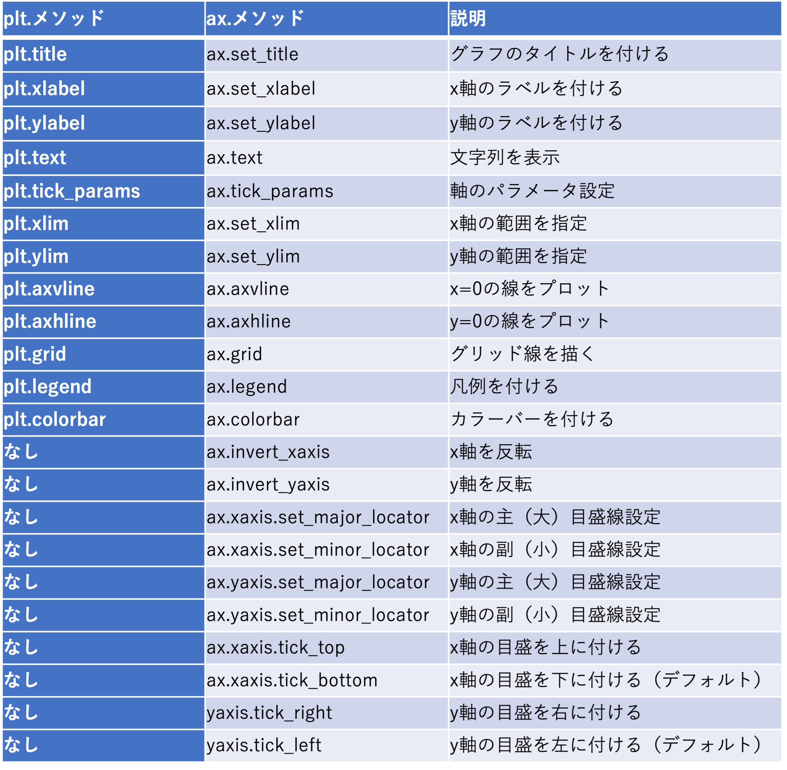
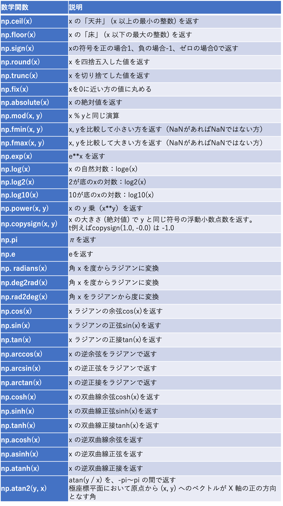
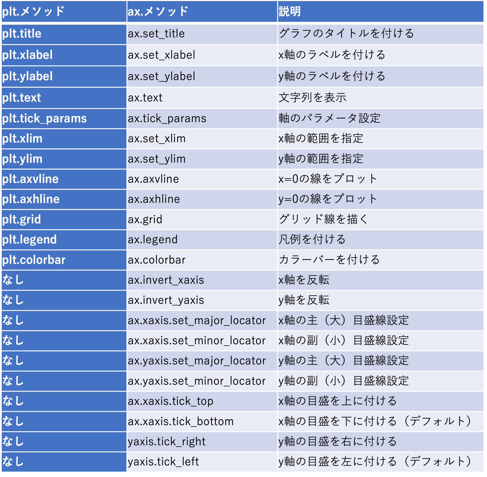
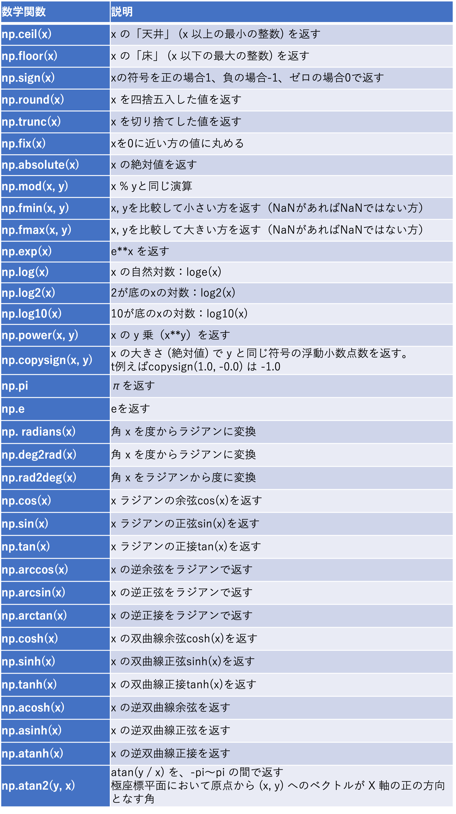

matplotlib：チュートリアル
これからmatplotlibを使ってみようと思っている人向けに、チュートリアルを作成しました。内容は「３章 matplotlibの基本」に載せているチュートリアルを元にしていますが、まだ手元にpython環境を構築していないことを前提としていますので、ブラウザ上で簡単に試すことができるGoogle Colaboratory上での作図方法を紹介しています。既に手元でpythonを利用できるようになっていれば、「matplotlibの基本」を試すことも可能です。なお図表番号は「matplotlibの基本」と合わせています。
作成者：山下陽介（NIES←JAMSTEC）
準備
Google Colaboratory
Google Colaboratoryは、ブラウザ上からpythonプログラムを記述し実行できるようにしたものです。Googleアカウントを持っていれば、無料で利用できます。
Google Colaboratoryを利用するには、https://colab.research.google.com/にアクセスします。まずは、下側に表示される[ノートブックを新規作成]をクリックします。
モジュールのインポート
作図の準備として、必要なモジュールをインポートします。pythonを起動しただけでは最低限のツールしか利用できないので、作図に必要なツールを有効にする操作としてインポートを行ったと思ってください。作図を行うためのmatplotlibはmatplotlib.pyplot、関数などを利用するためのNumpyはnumpyでインポートします。import numpy as npのような書式は、インポートしたnumpyを今後はnpで参照できることを意味しています。同様にmatplotlibはpltで参照できます。作図したものが画面に表示できるように%matplotlib inlineを行います。
import numpy as np import matplotlib.pyplot as plt %matplotlib inline
matplotlibの基本
matplotlibの動かし方
新たな図を作成するために、plt.figureを使いウィンドウを生成します。これだけではまだプロットできないので、add_subplotを使い画面上にサブプロットを作成します。空の１つのサブプロットを持ったウィンドウが作成されます。
fig = plt.figure() ax = fig.add_subplot(1, 1, 1)
{kind=link}
関数グラフの作成
次は作成したサブプロット上に簡単なグラフを作成してみます。ここでは、Numpyを使ってcos(x)を作図します。np.linspaceは、線形に等間隔な数列を生成する関数です。円周率を返すnp.piと組み合わせてplt.plotを使い[-π, π]で作図します。plt.plotの最初の２つの引数には、x軸、y軸に表示させたいデータを与えます。
引数として渡したcolor='k', ls='-'がオプションで、それぞれ色（黒）、線種（実線）を意味しています。colorには図３−２−２のような色指定が可能で、color='k'とc='k'、color='red'、c='red'のいずれも同じです。

図３−２−２ matplotlibの色指定。赤ならcolor="r"、またはc="r"のように指定する
図３−２−３ matplotlibで指定可能な色の一覧（https://pythondatascience.plavox.info/wp-content/uploads/2016/06/colorpalette.png）
どうしても自分で色を作りたい場合は、color='#d62728'のように、'#rrggbb'の書式でRGBの０〜255の値を２桁の16進数で入力します。
sin(x)も重ねてみます。
sin(x)を描く際に、ls='--'で線種を破線に変えています。線種として使用可能なものを表３−２−１にまとめました。
表３−２−１ matplotlibのlinestyleで指定可能な線種一覧

線を区別するためにplt.legend で凡例も追加します。
凡例の場所はloc=’best’では自動指定ですが、loc=’upper left’のように強制的に位置を指定することも可能です（図３−２−５）。
図３−２−５ plt.legendで指定可能な位置。他にbestで自動指定も可能
x = np.linspace(-np.pi, np.pi) plt.plot(x, np.cos(x), color='k', ls='-', label='cos(x)')
{kind=link}
引数として渡したcolor='k', ls='-'がオプションで、それぞれ色（黒）、線種（実線）を意味しています。colorには図３−２−２のような色指定が可能で、color='k'とc='k'、color='red'、c='red'のいずれも同じです。
図３−２−２ matplotlibの色指定。赤ならcolor="r"、またはc="r"のように指定する
{kind=link}
図３−２−３ matplotlibで指定可能な色の一覧（https://pythondatascience.plavox.info/wp-content/uploads/2016/06/colorpalette.png）
{kind=link}
どうしても自分で色を作りたい場合は、color='#d62728'のように、'#rrggbb'の書式でRGBの０〜255の値を２桁の16進数で入力します。
sin(x)も重ねてみます。
plt.plot(x, np.sin(x), color='r', ls='--', label='sin(x)')
{kind=link}
sin(x)を描く際に、ls='--'で線種を破線に変えています。線種として使用可能なものを表３−２−１にまとめました。
表３−２−１ matplotlibのlinestyleで指定可能な線種一覧
線を区別するためにplt.legend で凡例も追加します。
plt.legend(loc='best')
{kind=link}
凡例の場所はloc=’best’では自動指定ですが、loc=’upper left’のように強制的に位置を指定することも可能です（図３−２−５）。
{kind=link}
図３−２−５ plt.legendで指定可能な位置。他にbestで自動指定も可能
グラフにマーカーを追加する
これだけでは物足りないので、次のようにグラフにマーカーを追加してみます。np.tanh(x)でtanh(x)を作図します。marker='x'で×印のマーカーが付きます。
さらにtan-1(x) を青色で重ねてみます。marker='o', fillstyle='none'でopen circle になります。
matplotlib では数多くのマーカーが用意されています（表３−３−１）。
表３−３−１ matplotlibで指定可能なマーカーの一覧
marker='o'では塗りつぶしを変えることもできるので試してみましょう。まずmarker='o’, fillstyle='full'でclosed circle にしてみます。
ちょっと変わったマーカーを付けることもでき、marker='o', fillstyle='left'と すれば、左側だけ塗り潰せます。凡例もつけておきます。
他にも様々な塗りつぶしオプションがあるので一覧にしました（表３−３−２）。
表３−３−２ matplotlibのfillstyleで指定可能な塗り潰しオプション一覧

plt.plot(x, np.tanh(x), color='k', ls='-', label='tanh(x)', marker='x')これまでの作図が残っているので、pltの部分を次のように書き換えます。
{kind=link}
さらにtan-1(x) を青色で重ねてみます。marker='o', fillstyle='none'でopen circle になります。
plt.plot(x, np.arctan(x), color='b', ls='-', label='arctan(x)', marker='o', fillstyle='none')
{kind=link}
matplotlib では数多くのマーカーが用意されています（表３−３−１）。
表３−３−１ matplotlibで指定可能なマーカーの一覧
{kind=link}
marker='o'では塗りつぶしを変えることもできるので試してみましょう。まずmarker='o’, fillstyle='full'でclosed circle にしてみます。
plt.plot(x, np.arccosh(x), color='r', ls='-', label='arccosh(x)', marker='o', fillstyle='full')RuntimeWarmingが出ますが、作図はうまく行っているのでここでは無視します。
{kind=link}
ちょっと変わったマーカーを付けることもでき、marker='o', fillstyle='left'と すれば、左側だけ塗り潰せます。凡例もつけておきます。
plt.plot(x, np.arcsinh(x), color='c', ls='-', label='arcsinh(x)', marker='o', fillstyle='left') plt.legend(loc='best')
{kind=link}
他にも様々な塗りつぶしオプションがあるので一覧にしました（表３−３−２）。
表３−３−２ matplotlibのfillstyleで指定可能な塗り潰しオプション一覧
グラフを上下に並べる
これまでは、ウィンドウに１つのサブプロットのみでしたが、グラフを並べて表示したいこともあるでしょう。サブプロットは複数配置可能ですので、試してみましょう。fig.add_subplot を使い縦に２つの図を並べてみます。
fig.add_subplotの最初の引数が縦に並べる数、２つ目が横に並べる数、３つ目がサブプロットのうちの何番目に当たるかを表します。ax1が上のサブプロット、ax2が下のサブプロットに対応します。それぞれのサブプロットに図を描くには、ここで定義したax1、ax2を使います。
これまでのように[−π, π]の範囲を作成し、上のサブプロットax1にsinh(x)を描き凡例を追加してみます。サブプロットを指定して描く場合は、先ほどのplt.plotの代わりにax1.plotのように指定します。凡例についても同様で、plt.legendの代わりにax1.legendを使います。
線がこれまでより太いのが分かると思います。lw=6と指定したためです（デフォルトはlw=1）。lw=6の代わりにlinewidth=6としても同じです。下のサブプロットax2にcosh(x)を描き凡例を追加してみます。ls=''とすれば、線が消えてマーカーのみになります。marker='x', ms='3'で×印で大きさ3のマーカーを追加します（デフォルトはms=6）。markersize=3としても同じです。
import numpy as np import matplotlib.pyplot as plt %matplotlib inline fig = plt.figure() ax1 = fig.add_subplot(2, 1, 1) ax2 = fig.add_subplot(2, 1, 2)
{kind=link}
fig.add_subplotの最初の引数が縦に並べる数、２つ目が横に並べる数、３つ目がサブプロットのうちの何番目に当たるかを表します。ax1が上のサブプロット、ax2が下のサブプロットに対応します。それぞれのサブプロットに図を描くには、ここで定義したax1、ax2を使います。
これまでのように[−π, π]の範囲を作成し、上のサブプロットax1にsinh(x)を描き凡例を追加してみます。サブプロットを指定して描く場合は、先ほどのplt.plotの代わりにax1.plotのように指定します。凡例についても同様で、plt.legendの代わりにax1.legendを使います。
x = np.linspace(-np.pi, np.pi) ax1.plot(x, np.sinh(x), color='b' , ls='-', lw=6, label='sinh(x)') ax1.legend(loc='best')
{kind=link}
線がこれまでより太いのが分かると思います。lw=6と指定したためです（デフォルトはlw=1）。lw=6の代わりにlinewidth=6としても同じです。下のサブプロットax2にcosh(x)を描き凡例を追加してみます。ls=''とすれば、線が消えてマーカーのみになります。marker='x', ms='3'で×印で大きさ3のマーカーを追加します（デフォルトはms=6）。markersize=3としても同じです。
ax2.plot(x, np.cosh(x), color='r', ls='', marker='x', ms='3', label='cosh(x)') ax2.legend(loc='best')
{kind=link}
４つのグラフを並べる
１つのウィンドウに４つのサブプロットを追加することもできます。新たに次のようなコードを入力していきます。
左下にサブプロットを追加し、横にちょっとずらして（0.2、0.4）に配置します。新たに出てきたalpha=0.7は不透明度を指定する引数で、0が透明、1が不透明です（デフォルトは1）。
右下にもサブプロットを追加します。
図にx * sin(x)のグラフを追加してみます。オプションとして追加したdrawstyle='default'は、これまでも使用してきたデフォルト設定の折れ線グラフです。
最後に折れ線グラフで使用できるオプション一覧を表３−４−１にまとめておきます。
表３−４−１ matplotlibのpyplot.plotのオプション一覧

import matplotlib.pyplot as plt %matplotlib inline fig = plt.figure(figsize=(9, 6))これまでとは異なり、plt.figureでウィンドウを作成する際にfigsize=(9, 6)で大きさを指定しました。このようにすれば図の（横、縦）のサイズを指定することが可能です。ウィンドウの中にサブプロットを作成します。
ax1 = fig.add_subplot(2, 2, 1)でウィンドウの左上に図が出てきます。３つ目の引数の１番目が左上、２番目が右上、３番目が左下、４番目が右下に対応します。サブプロットの(0.4、0.4)の位置にplt.textでテキストを書いてみます。一番目の引数が横の位置、二番目の引数が縦の位置、３番目の引数がテキストで、fontsize=20で文字の大きさを指定できます。
plt.text(0.4, 0.4, "(2,2,1)", fontsize=20, color='k')
{kind=link}
ax2 = fig.add_subplot(2, 2, 2) plt.text(0.4, 0.4, "(2,2,2)", rotation=30, fontsize=20, color='k'
{kind=link}
左下にサブプロットを追加し、横にちょっとずらして（0.2、0.4）に配置します。新たに出てきたalpha=0.7は不透明度を指定する引数で、0が透明、1が不透明です（デフォルトは1）。
ax3 = fig.add_subplot(2, 2, 3) plt.text(0.2, 0.4, "(2,2,3)", fontsize=20, color='k', alpha=0.7)
{kind=link}
右下にもサブプロットを追加します。
ax4 = fig.add_subplot(2, 2, 4) plt.text(0.2, 0.4, "(2,2,4)", fontsize=20, color='k')
{kind=link}
図にx * sin(x)のグラフを追加してみます。オプションとして追加したdrawstyle='default'は、これまでも使用してきたデフォルト設定の折れ線グラフです。
import numpy as np x = np.linspace(-np.pi, np.pi) ax1.plot(x, x * np.sin(x), color='r', ls='--', drawstyle='default')他に３種類の設定が使えるので、ax2〜ax4に並べてみます（図３−４−４）。 ax2：drawstyle='steps-post'：階段状（後側） ax3: drawstyle='steps-pre' または 'steps'：前側 ax4：drawstyle='steps-mid'：中央
ax2.plot(x, x * np.sin(x), color='r', ls='-', drawstyle='steps-post') ax3.plot(x, x * np.sin(x), color='r', ls='-', drawstyle='steps-pre') ax4.plot(x, x * np.sin(x), color='r', ls='-', drawstyle='steps-mid')３種類の階段状のグラフは、よく見ないと違いが分かりませんが、グラフの両端をみると、前側、後側、両方、のいずれに飛び出しているかが違っています。
{kind=link}
最後に折れ線グラフで使用できるオプション一覧を表３−４−１にまとめておきます。
表３−４−１ matplotlibのpyplot.plotのオプション一覧
グラフの体裁を整える
グラフを作図した際にサイズを調整したり、目盛り線を変更したり、タイトルを付けたりするなど、体裁を整えたいこともあると思います。いくつかの例を紹介しておきます。まずはsinh(x)を描いてみます。ウィンドウを作成する際に、plt.figure(figsize=(6, 3))としています。
新たに次のようなコードを入力していきます。
図にplt.titleでタイトルを付けてみます。fontsize=24で文字の大きさを24ポイントに変えました。
ちなみに、fontsizeは整数の他に文字列で指定することもでき、"xx-small"、"x-small"、"small"、"medium"、"large"、"x-large"、"xx-large"を指定可能です。fontweightというオプションで文字の太さを変えることもでき、０〜1000の整数か、"ultralight"、"light"、"normal"、"regular"、"book"、"medium"、"roman"、"semibold"、"demibold"、"demi"、"bold"、"heavy"、"extra bold"、"black"の文字列を指定可能です。例えば太字にするには、fontweight="bold"です。fontsizeオプションは見た目に反映されますが、fontweightオプションは細かく設定しても変わらないようです（表３−５−１）。
表３−５−１ 文字列の大きさと太さを指定するオプション一覧
軸の大目盛りの間隔を変更し、ラベルの付いていない小目盛りも追加します。目盛り線の設定にはmatplotlib.tickerを使います。ticker.AutoLocator()が大目盛り、ticker.AutoMinorLocator()が小目盛りの自動設定を返し、xaxis.set_major_locatorや、xaxis.set_minor_locatorの値を置き換えます。x軸に小目盛りが追加されたでしょうか。大目盛りの方はticker.AutoLocator()の値が1毎だったので、変更はありません。
y軸についても変更します。今度はticker.MultipleLocator(値)を使い、大目盛りを10毎、小目盛りを2毎に手動設定してみます。MultipleLocatorは指定した値の間隔で目盛りの設定を返すものです。
x軸とy軸にラベルを付けてみます。ax.set_xlabel、ax.set_ylabelを使います。文字サイズや色を同時に指定可能です。黒色でx-axis、赤色でy-axisが表示されたでしょうか。サブプロットを複数設定した場合は、axの番号を変えて、それぞれのサブプロットに別のラベルを設定可能です。
plt.subplots_adjustでずの大きさを調整してみます。hspace=0.8で水平を８割の大きさに、bottom=0.2で下に２割の空きを付けます。ラベルが図からはみ出した場合などの調整に使います。
さらに、plt.gridを使い大目盛りの位置にグリッド線を引きます。折れ線グラフ同様、色や線種、線の太さなども指定できます。灰色の点線に設定してみます。
x=0、y=0などの線を追加することもできます。plt.axhlineで水平方向、plt.axvlineで鉛直方向の線を引きます。色や線種が指定できるので、黒の破線に設定してみます。
折れ線グラフと一緒に使える機能をもう１つ紹介しておきます。まずは点線でcosh(x)を重ねます。sinh(x)よりcosh(x)の値が大きいので、plt.fill_between（ax.fill_betweenも同じ）を使い、その間を灰色で塗り潰してみます。１番目の引数がx軸、２番目の引数がy軸を塗り潰す下限値、３番目の引数がy軸を塗り潰す上限値を表しています。color='gray', alpha=0.4で灰色の半透明な色で塗り潰します。
plt.titleでタイトルも変えておきます。先ほどのplt.titleをもう一度呼び出すと、これまでのタイトルが置き換えられます。
最後に、グラフの体裁を整える際に用いることがある主なメソッドを表３−５−２にまとめておきます。
表３−５−２ 図の体裁を整える時に用いるメソッド一覧

これらのメソッドのうちplt.textでは、書式の設定で様々なオプションが出てきたので、ここで表３−５−３にまとめておきます。なお、最初の行のx、yを除けば、plt.textと同じオプションをplt.title、plt.xlabel、plt.ylabelでも使うことができます。
表３−５−３ matplotlibのpyplot.textの主要オプション一覧
使用方法：plt.text(x, y, s)、plt.text(x, y, s, オプション)
表３−５−３には、これまでに出てこなかったオプションとして、水平方向の位置を指定するhorizontalalignment（省略形：ha）、鉛直方向の位置を指定するverticalalignment（省略形：va）があります。haには'center'、'right'、'left'を指定可能で、vaには'top'、'bottom'、'center'、'baseline'、'center_baseline'を指定可能です（表３−５−４）。x、yで指定する中央の位置を点線で示しています。
表３−５−４ 文字列の水平位置と鉛直位置を指定するオプション、点線は中央の位置

これまでに、Numpyを使った関数の作成が度々出てきました。Numpyには便利な機能が多数含まれていますが、ここでは関数の作成や簡単な計算に用いることができる主要な数学関数を紹介しておきます（表３−５−５）。
表３−５−５ Numpyの主要な数学関数一覧

import matplotlib.pyplot as plt import numpy as np %matplotlib inline fig = plt.figure(figsize=(6, 3)) ax = fig.add_subplot(1, 1, 1) x = np.linspace(-np.pi, np.pi) ax.plot(x, np.sinh(x), color='k')
{kind=link}
図にplt.titleでタイトルを付けてみます。fontsize=24で文字の大きさを24ポイントに変えました。
plt.title("sinh(x)", fontsize=24)
{kind=link}
ちなみに、fontsizeは整数の他に文字列で指定することもでき、"xx-small"、"x-small"、"small"、"medium"、"large"、"x-large"、"xx-large"を指定可能です。fontweightというオプションで文字の太さを変えることもでき、０〜1000の整数か、"ultralight"、"light"、"normal"、"regular"、"book"、"medium"、"roman"、"semibold"、"demibold"、"demi"、"bold"、"heavy"、"extra bold"、"black"の文字列を指定可能です。例えば太字にするには、fontweight="bold"です。fontsizeオプションは見た目に反映されますが、fontweightオプションは細かく設定しても変わらないようです（表３−５−１）。
表３−５−１ 文字列の大きさと太さを指定するオプション一覧
{kind=link}
軸の大目盛りの間隔を変更し、ラベルの付いていない小目盛りも追加します。目盛り線の設定にはmatplotlib.tickerを使います。ticker.AutoLocator()が大目盛り、ticker.AutoMinorLocator()が小目盛りの自動設定を返し、xaxis.set_major_locatorや、xaxis.set_minor_locatorの値を置き換えます。x軸に小目盛りが追加されたでしょうか。大目盛りの方はticker.AutoLocator()の値が1毎だったので、変更はありません。
import matplotlib.ticker as ticker ax.xaxis.set_major_locator(ticker.AutoLocator()) ax.xaxis.set_minor_locator(ticker.AutoMinorLocator())
{kind=link}
y軸についても変更します。今度はticker.MultipleLocator(値)を使い、大目盛りを10毎、小目盛りを2毎に手動設定してみます。MultipleLocatorは指定した値の間隔で目盛りの設定を返すものです。
ax.yaxis.set_major_locator(ticker.MultipleLocator(10.00)) ax.yaxis.set_minor_locator(ticker.MultipleLocator(2.00))
x軸とy軸にラベルを付けてみます。ax.set_xlabel、ax.set_ylabelを使います。文字サイズや色を同時に指定可能です。黒色でx-axis、赤色でy-axisが表示されたでしょうか。サブプロットを複数設定した場合は、axの番号を変えて、それぞれのサブプロットに別のラベルを設定可能です。
ax.set_xlabel("x-axis", fontsize=20)
ax.set_ylabel("y-axis", fontsize=20, color='r')
{kind=link}
plt.subplots_adjustでずの大きさを調整してみます。hspace=0.8で水平を８割の大きさに、bottom=0.2で下に２割の空きを付けます。ラベルが図からはみ出した場合などの調整に使います。
plt.subplots_adjust(hspace=0.8, bottom=0.2)
{kind=link}
さらに、plt.gridを使い大目盛りの位置にグリッド線を引きます。折れ線グラフ同様、色や線種、線の太さなども指定できます。灰色の点線に設定してみます。
plt.grid(color='gray', ls=':')
{kind=link}
x=0、y=0などの線を追加することもできます。plt.axhlineで水平方向、plt.axvlineで鉛直方向の線を引きます。色や線種が指定できるので、黒の破線に設定してみます。
plt.axhline(y=0, color='k', ls='--') plt.axvline(x=0, color='k', ls='--')
{kind=link}
折れ線グラフと一緒に使える機能をもう１つ紹介しておきます。まずは点線でcosh(x)を重ねます。sinh(x)よりcosh(x)の値が大きいので、plt.fill_between（ax.fill_betweenも同じ）を使い、その間を灰色で塗り潰してみます。１番目の引数がx軸、２番目の引数がy軸を塗り潰す下限値、３番目の引数がy軸を塗り潰す上限値を表しています。color='gray', alpha=0.4で灰色の半透明な色で塗り潰します。
ax.plot(x, np.cosh(x), color='k', ls='--') ax.fill_between(x, np.sinh(x), np.cosh(x), color='gray', alpha=0.4)
{kind=link}
plt.titleでタイトルも変えておきます。先ほどのplt.titleをもう一度呼び出すと、これまでのタイトルが置き換えられます。
plt.title("sinh(x) & cosh(x)", fontsize=24)
{kind=link}
最後に、グラフの体裁を整える際に用いることがある主なメソッドを表３−５−２にまとめておきます。
表３−５−２ 図の体裁を整える時に用いるメソッド一覧

{kind=link}
これらのメソッドのうちplt.textでは、書式の設定で様々なオプションが出てきたので、ここで表３−５−３にまとめておきます。なお、最初の行のx、yを除けば、plt.textと同じオプションをplt.title、plt.xlabel、plt.ylabelでも使うことができます。
表３−５−３ matplotlibのpyplot.textの主要オプション一覧
{kind=link}
使用方法：plt.text(x, y, s)、plt.text(x, y, s, オプション)
表３−５−３には、これまでに出てこなかったオプションとして、水平方向の位置を指定するhorizontalalignment（省略形：ha）、鉛直方向の位置を指定するverticalalignment（省略形：va）があります。haには'center'、'right'、'left'を指定可能で、vaには'top'、'bottom'、'center'、'baseline'、'center_baseline'を指定可能です（表３−５−４）。x、yで指定する中央の位置を点線で示しています。
表３−５−４ 文字列の水平位置と鉛直位置を指定するオプション、点線は中央の位置
これまでに、Numpyを使った関数の作成が度々出てきました。Numpyには便利な機能が多数含まれていますが、ここでは関数の作成や簡単な計算に用いることができる主要な数学関数を紹介しておきます（表３−５−５）。
表３−５−５ Numpyの主要な数学関数一覧

{kind=link}
[top]